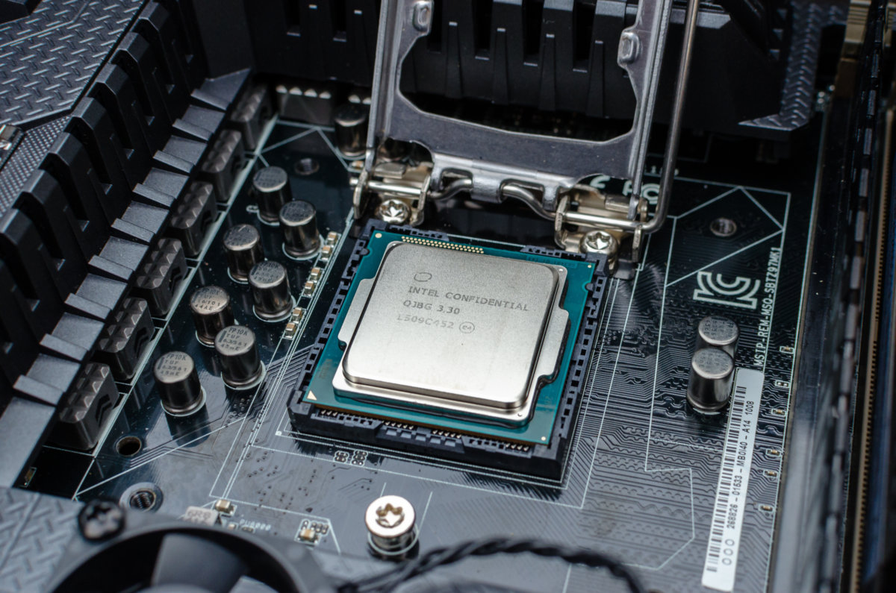
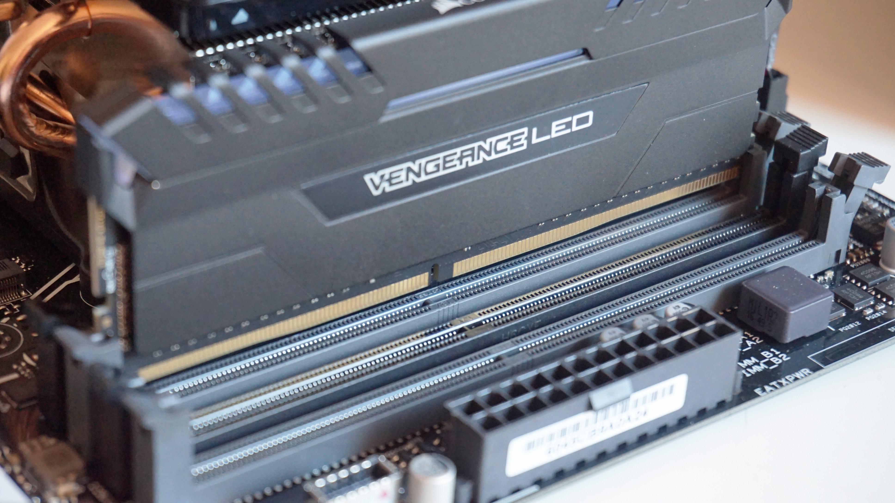
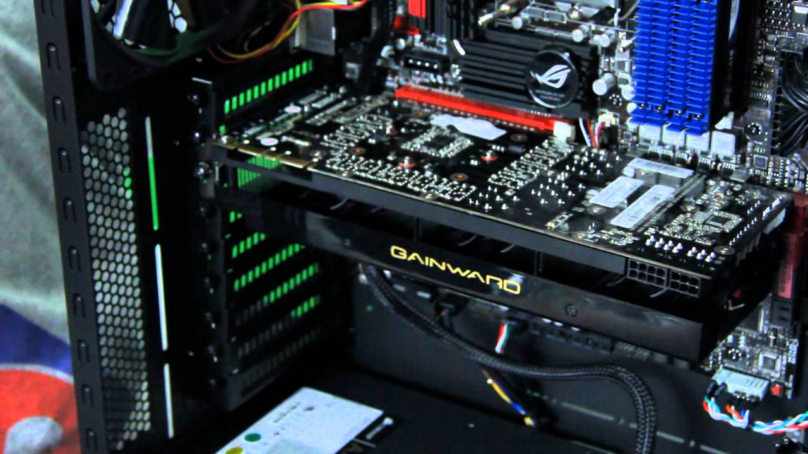
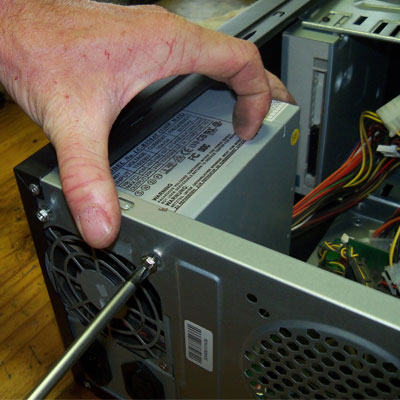
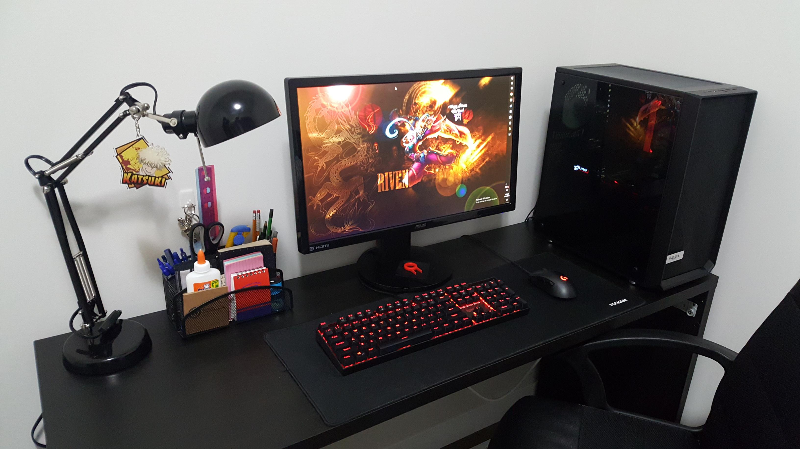

Now we're at the main event! You have your parts altogether and you are ready to put them in your PC, on this page I'll just go through step by step how you should build your PC and put all the parts together and by the end of it you should have a working system that will only need one or two little touches to be fully completed so let's get started.
1. firstly, you need to open the PC case that you bought so you can start putting pieces inside.
2. you are then going to get your CPU and install it into your motherboard , there is a perfect slot for your CPU in the motherboard, you may need to lift the flap or just simply place it down as certain motherboards deal with this in their own ways.
3. once your CPU is in and secure you then need to install the heatsink or cooling fan for your CPU if you're using the stock one that came with the CPU it should fit directly over and there should be screws or pegs that will fit into the holes already in the motherboard as by design, remember not to push too hard and end up breaking something if you're doing things right things should fall into place and only need a little pressure to fit.
4. next it's time to install the RAM. Take your RAM and place them in the slots next to where you put the CPU, when you push them down into their slots the clips on either side should flip up locking it into place and that is then completed.
5. next you put the motherboard in the case and line it up where the motherboard should be (this should be pretty obvious in most cases), most motherboards come with a shield a simple metal plate they can put on the back of your case where the motherboard slots in and stops dust or anything getting into the case from the back and once this is all done simply screw your motherboard into place, there should be pre made holes for your motherboard already in the case directly where you need to put it so all this requires is lining up and simply screwing it in.
6. next it's time to install your graphics card. remove any slot covers on the back of your case so that you can slide your graphics card in and then firmly place it into the motherboards designated slot and then screw it in the back of the case positioning it firmly so that it doesn't move at all and is safe and sound.
7. Then we install the hard drive, most cases have a hard drive tray or bracket that slides out and allows you to put your hard drive in it and sometimes even screw it into the bracket to keep it secure.
8. Now you can install the power supply at the bottom of your case, there should be a shield that you can unscrew and then slide your power source and wires through once you do this you can screw your power source into place and screw the shield back on making sure that your power source is firmly in place and does not move .
9. Now we get onto the trickier part, plugging in all the cables from the power source into their designated spots in the motherboard. I will go over each one step by step. It may be useful reading the motherboard user manual to find where these exact slots are so that when you read these points you know what to plug in where:
-firstly, find your USB 3 cables and plug them into the motherboard
-next you attach your HD audio table into the small pins on your motherboard
-after this you attach any remaining cables to its little pins in the motherboard such as the case lights or case fans to their designated power slots (pins)
-then we connect the graphics card power pins to the power source finding the correct pins and sliding them into the back into the graphics card
-you then connect the PSU or the main power source unit to the motherboard this is the easiest as it should be along 24 pin connector that slides into a 24-pin hole
-next you connect the power to the hard drives, and these should also be a little easier as these are thin rectangular cables that only fit in hard drive ports
-like before, we then plug the CPU power pins and the heat sink power pins into the motherboard and this should be clearly labelled so it is easy to do
-you can now attach your hard drive to your motherboard with specific SATA cables that come with your motherboard or hard drives
Now you just turn on your power unit and go!
There are extra steps such as connecting the screen, mouse and keyboard and so on as well as once you turn your PC on installing an operating system but these are all parts that depend on the person and the system you’re building so they aren't detailed here as the information you need can be found online for your specific unit. Once this is all complete you now have a working system and you're ready to do whatever you want with it. Now that you built one easily and simply you can do it repeatedly just follow these simple steps, the possibilities are endless! I hope this has sparked your interest in computers and you continue doing this for yourself and your friends and family or even for your work.
